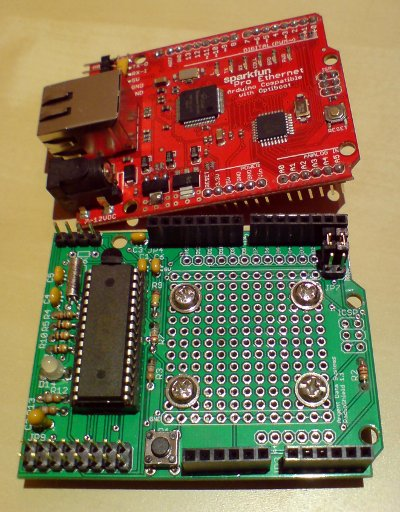

Airgate: A Receive-Only, Low-Power APRS iGate
Markus Heller, DL8RDS

- Project Source Code
http://hamradioprojects.com/authors/dl8rds/+airgate/code - Inspiration
I was inspired by http://www.botanicalls.com where an Arduino sends twitter messages about the thirstiness of flowers. - YouTube Video
I describe the ArgentData RadioShield, in German:
http://www.youtube.com/watch?v=SuR8mAFtHw8 - Source code for this project
http://cookbook.wa5znu.org/projects/airgate - Argent Data Radio Shield
http://wiki.argentdata.com/index.php?title=Radio_Shield - APRS Information
http://aprs.org
http://aprs.org/doc/APRS101.PDF - APRS Tier2 Network
http://www.aprs2.net - APRS Protocols
http://www.aprs.net/vm/DOS/PROTOCOL.HTM - Connecting to APRS-IS
http://www.aprs-is.net/Connecting.aspx - APRS iGate Properties
http://wiki.ham.fi/APRS_iGate_properties - AX.25
http://en.wikipedia.org/wiki/AX.25 - APRS.fi
http://aprs.fi - Python programming language for Windows, Linux, and Mac
http://python.org - Python TCP and UDP Sockets
http://docs.python.org/howto/sockets.html - PHG Calculator
http://www.aprsfl.net/phgr.php - Python Beginners Guide
http://wiki.python.org/moin/BeginnersGuide - Python for non-programmers
http://wiki.python.org/moin/BeginnersGuide/NonProgrammers - Arduino Ethernet Library
http://arduino.cc/en/Reference/Ethernet - SparkFun Ethernet Pro
http://www.sparkfun.com/products/10536 - Arduino Uno Ethernet
https://www.adafruit.com/products/418 - NRX1 FM Receiver Module (order 144.39 MHz for US)
http://www.lemosint.com/radiometrix/radiometrix_details.php?itemID=212 - APRS-IS Send-only Ports
http://www.aprs-is.net/SendOnlyPorts.aspx - Internet Protocol UDP
http://en.wikipedia.org/wiki/User_Datagram_Protocol - Internet Protocol TCP
http://en.wikipedia.org/wiki/Transmission_Control_Protocol - Stacking Headers
These are a popular item and you can add them to your order from just about any popular Arduino supplier:- Evil Mad Science: http://evilmadscience.com/productsmenu/partsmenu/251
- Sparkfun: http://www.sparkfun.com/products/10007
- Jameco: http://www.jameco.com
- Adafruit: http://www.adafruit.com/products/85
- FTDI Cable or breakout board for programming the integrated
Ethernet Arduino
- http://www.sparkfun.com/products/9717
- http://www.adafruit.com/products/70
- [http://www.jameco.com/webapp/wcs/stores/servlet/Product_10001_10001_2152243-1](http://www.jameco.com/webapp/wcs/stores/servlet/Product_10001_10001_2152243-1)
- http://jeelabs.com/products/usb-bub
License
The Arduino sketch in this project is made available under the
MIT License:
http://www.opensource.org/licenses/mit-license